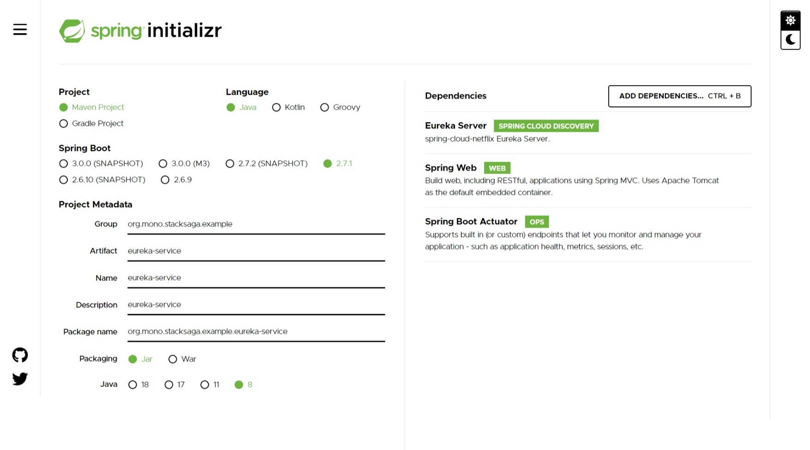

Introduction
Here we are going to implement a complete microservices project by using spring boot with stacksaga framework step by step. by following this example you will be able to have a good idea of how the microservice architecture flows, and how StackSaga framework gives the support for solving the architecture's challenges.
Full source code on GithubRequirements
The following requirements are required
Overview
The following projects are built in this example.
| api-gateway | To routing the requests and as a basic load balancing |
|---|---|
| eureka-service (eureka-server) | As the service registry |
| order-service | This is the main service which responsible for managing and maintain the orders related data and operations. |
| user-service | This is the main service which responsible for managing and maintain the user related data and operations. |
| payment-service | This is the main service which responsible for managing and maintain the payment related data and operations. |
| delivery-service | This is the main service which responsible for managing and maintain the delivery related data and operations. |
Here is the interaction diagram between above listed services. (before adding the stack saga framework)

Here is the flow diagram how the place-order request gets complete. (before adding the stack saga framework)

The customer place an order and the place-order request coming into the backend side and how the request goes through each service.
-
create-order
the order service will create the order as the first step.
-
check-user
After creating the order, to be executed other process, the user status is checked by using the user service.
-
make-payment
After checking the user status, if the user is eligible to place the order,the payment will be proceeded.
-
increase-point
just imagine, the store has a feature to collect points when the customer buy upon the total bill amount. after making the payment, the customer will be qualified to get increased their points. as the example, the point are managed by the user-service as well.
-
increase-point
after increasing the point the order is get readied to be delivered. the delivery-service will keep the delivery data finally.
-
update-order-status
after processing all the process, this is the time to update the order status as the order has been successfully placed.

Note
This is the typical example that you can see when you are moving to microservice architecture. as the initial, let's build the typical example and after that we will be adding more advanced topic and concept into this small example. it will be convenient adn appropriate for you if you are new to the microservices.
Implementation
according to the use-case the 1st step is creating the Eureka service (service registry service). so you might have a question, why the eureka service is the 1st implementation ? The simple answer is that all others listed services are connected with the registry server. without having the registry server, other services can't talk to each other even the API gateway service. so you can mainly identify 2 types of server components are here.
you can see here the classification of the components in microservice architecture by service or non-service
Creating eureka service.
Visit to the spring initializer and create the project by adding the following dependencies.

for creating the eureka-service,
spring-boot-starter-web
dependency, spring-cloud-starter-netflix-eureka-server
dependency and
spring-boot-starter-actuator
dependency have been used.
spring-boot-starter-web dependency will take care of the endpoints and
spring-cloud-starter-netflix-eureka-server provides the
service registry capabilities and spring-boot-starter-actuator provides metrics endpoint to
monitoring
the application.
unzip and open the project with your favourite IDE. and next annotate the main class of the
project by @EnableEurekaServer. it will enable the service registry capabilities
for your application.
now we move to the configuration part of the eureka-service. the required configurations are
configured here, and we use .yml file format instead of .properties
format. by default your project has .properties file. if you prefer to use .properties,
it doesn't matter.
if you want to more configurations, please be kind to refer the official reference document here.
eureka-service > src/main/resources/application.yaml
after all, the folder structure of the eureka-server application's src directory will be like this.
├───main
│ ├───java
│ │ └───org
│ │ └───mono
│ │ └───stacksaga
│ │ └───example
│ │ └───eurekaservice
│ │ EurekaServiceApplication.java
│ │
│ └───resources
│ │ application.yaml
│ │
│ ├───static
│ └───templates
└───test
└───java
└───org
└───mono
└───stacksaga
└───example
└───eurekaservice
Creating order-service.
In the user-service we have to use additional dependencies than the eureka service. because in the user-service we want to access the database as well. therefore, we use spring boot jpa with mysql dependencies.
- spring-boot-starter-actuator
- spring-boot-starter-web
- spring-cloud-starter-netflix-eureka-client
- spring-boot-devtools
- lombok
- spring-cloud-starter-openfeign: The rest client for http

Same as th before, open the project with your favourite IDE. the order service is the service that is the starting point of the place order process.
let's implement step by step.
Configure the configuration
order-service > src/main/resources/application.ymlAnnotate the server as a eureka-client and enable feign-client
Database for order-service

Creating the entity classes according the order-service-db tables
Order.class (for ss_order table)
order-service > src/main/java/org/mono/stacksaga/example/orderservice/entity/Order.javaCustomerOrder.class (for ss_customer_order table)
order-service > src/main/java/org/mono/stacksaga/example/orderservice/entity/CustomerOrder.javaOrderStatusHistory.class (for ss_order_status_history table)
order-service > src/main/java/org/mono/stacksaga/example/orderservice/entity/OrderStatusHistory.javaCreating repositories for each entity classes
OrderRepository.class
order-service > src/main/java/org/mono/stacksaga/example/orderservice/repository/OrderRepository.javaCustomerOrderRepository.class
order-service > src/main/java/org/mono/stacksaga/example/orderservice/repository/CustomerOrderRepository.javaOrderStatusHistoryRepository.class
order-service > src/main/java/org/mono/stacksaga/example/orderservice/repository/OrderStatusHistoryRepository.javacreating the services for execute the business logics
You know already about the design pattern we normally use in spring boot project. it is controller
> service > repository but here we have divided the service layer into two parts called
internal-services and external-services upon the usage (accessing) of resources
for operations.
- Internal-services - all services which access local repositories or local supportive services for their operations
- External-services - all services which access external endpoints or external services for their operations

InternalCustomerOrderService.class
Due to the accessing their own repositories to process the operations the CustomerOrderService is an internal service. For convenience, we use a prefix for the class name as Internal.
CustomerOrderService has two methods for creating the order and update the order after creating the order. in the next step the service class will be accessed by the controller class to place the order.
order-service > src/main/java/org/mono/stacksaga/example/orderservice/service/internal/InternalCustomerOrderService.javanow we have completed 1st step and 5th step of the place order process. those processes are processed by using internal resources. The current status of the flow like below.

next we are going to implement the step of the flow called check-user. the check user process is proceed from the user-service (external). but the user-service hasn't been implemented yet. even though, we are going to implement the rest-client part of accessing user-service, inside the order-service by imagining the rest-endpoint already implemented. (in the few next steps, the user-service is created)
creating user service access class
before creating the user service we have to create the response body DTO.
UserIsActiveResponseBody.class
next we are going to create the external user service by using the dto that we created above.
ExternalUserService.class
due to the accessing the data from external service, the ExternalUserService is created at the external-service package. The ExternalUserService is a feign-client bean. the bean will make a request to the user-service by the URL that we provided and pass the response as the return when we call the method. if you are not familiar with feign-client, please refer this. or alternatively you can use spring rest-template as well.
order-service > org/mono/stacksaga/example/orderservice/service/external/ExternalUserService.javanow we have completed 1st, 2nd step and 6th step of the place order process.

Creating payment service access class
before creating the user service we have to create the response body and request body DTOs to communicate with the user microservice using http protocol.
MakePaymentRequestBody.class
order-service > org/mono/stacksaga/example/orderservice/dto/MakePaymentRequestBody.javaMakePaymentResponseBody.class
order-service > org/mono/stacksaga/example/orderservice/dto/MakePaymentResponseBody.javanext we are going to create the external user service by using the DTOs that we created above.
ExternalPaymentService.class
Next we are going to implement the step of the flow called make_payment. the make payment process is proceed from the payment-service (external). but the payment-service hasn't been implemented yet. even though, we are going to implement the rest-client part of accessing payment-service, inside the order-service by imagining the rest-endpoint already implemented. (in the few next steps, the payment-service is created)
order-service > org/mono/stacksaga/example/orderservice/service/external/ExternalPaymentService.javanow we have completed 1st, 2nd , 3rd and 6th steps of the place order process.

Creating user point service access class
ExternalUserPointsService.class
order-service > org/mono/stacksaga/example/orderservice/service/external/ExternalUserPointsService.java
Creating delivery service access class
before creating the user service we have to create the response body and request body DTOs to communicate with the user microservice using http protocol.
AddToDeliverRequestBody.class
order-service > org/mono/stacksaga/example/orderservice/dto/AddToDeliverRequestBody.javaAddToDeliverResponseBody.class
order-service > org/mono/stacksaga/example/orderservice/dto/AddToDeliverResponseBody.javaExternalDeliveryService.class
order-service > org/mono/stacksaga/example/orderservice/service/external/ExternalDeliveryService.java
now we have successfully created all external and internal access service classes. now we are going too to use those services to place the order process and create the endpoint in the order-service.
Creating the controller and endpoint
This is the time to create the endpoint (controller) for place order. but before creating the controller, we have to create the DTOs fore place order response and place order request.
PlaceOrderRequestBody.class
The data transfer object for place order request. (RequestBody)
order-service > src/main/java/org/mono/stacksaga/example/orderservice/dto/PlaceOrderRequestBody.javaPlaceOrderResponseBody.class
The data transfer object for place order response. (ResponseBody)
order-service > src/main/java/org/mono/stacksaga/example/orderservice/dto/PlaceOrderResponseBody.javaOrderController.class
by using the response body and request body object classes, the controller class will be created like below.
order-service > org/mono/stacksaga/example/orderservice/controller/OrderController.javahere, we have implemented all process that we want to process the place-order inside
order-service.
now you can run
the project. but you can't call the endpoint localhost:8080/order-service/place
cause the other microservices haven't been implemented yet. in the next few steps, we are going
to implement all other microservices.
So far, The order-service's project file structure will be like below
└───main
├───java
│ └───org
│ └───mono
│ └───stacksaga
│ └───example
│ └───orderservice
│ │ OrderServiceApplication.java
│ │
│ ├───controller
│ │ OrderController.java
│ │
│ ├───dto
│ │ AddToDeliverRequestBody.java
│ │ AddToDeliverResponseBody.java
│ │ MakePaymentRequestBody.java
│ │ MakePaymentResponseBody.java
│ │ PlaceOrderFailedResponseBody.java
│ │ PlaceOrderRequestBody.java
│ │ PlaceOrderSuccessResponseBody.java
│ │ UserIsActiveResponseBody.java
│ │
│ ├───entity
│ │ CustomerOrder.java
│ │ Order.java
│ │ OrderStatusHistory.java
│ │
│ ├───repository
│ │ CustomerOrderRepository.java
│ │ OrderRepository.java
│ │ OrderStatusHistoryRepository.java
│ │
│ └───service
│ ├───external
│ │ ExternalDeliveryService.java
│ │ ExternalPaymentService.java
│ │ ExternalUserPointsService.java
│ │ ExternalUserService.java
│ │
│ └───internal
│ InternalCustomerOrderService.java
│
└───resources
│ application.yml
│
├───static
└───templates
Creating Cloud Api Gateway.
As the 2nd step we are going to implement our api gateway project. Same as before, go the spring initializer and add the following dependencies and create a project and open it with your IDE.

At this time we have eureka-service. therefore we have to register our api gateway application with the eureka service. to do that, the following configurations have to be configured. after doing configuration, the eureka-client dependency provides the capability of connecting with the eureka service. That means the API cloud gateway project run as a clint of the eureka service as well.
Creating user-service.
Visit to the spring initializer and create the project by adding the following dependencies.

Creating payment-service.
Visit to the spring initializer and create the project by adding the following dependencies.
Creating delivery-service.
Visit to the spring initializer and create the project by adding the following dependencies.